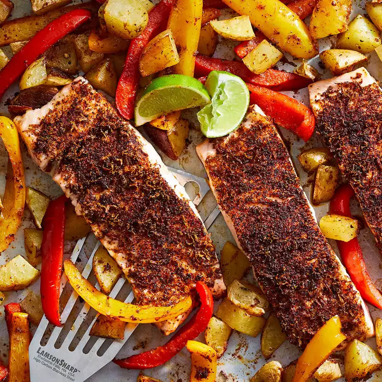

Sheet-Pan Chili Lime Salmon with Potatoes & Peppers

Ingredients:
1 pound Yukon Gold potatoes, cut into 3/4 inch pieces
2 tablespoons extra-virgin olive oil, divided
3/4 teaspoon salt, divided
1/4 teaspoon ground pepper
2 teaspoons chili powder
1 teaspoon ground cumin
1/2 teaspoon garlic powder
1 lime, zested and quartered
2 medium bell peppers, any color, sliced
1 1/4 pounds center-cut salmon fillet, skinned, if desired, and cut into 4 portions
Directions:
Step 1: Preheat oven to 425 degrees F. Coat a large rimmed baking sheet with cooking spray.
Step 2: Toss potatoes, 1 tablespoon oil, 1/4 teaspoon salt and pepper together in a medium bowl. Transfer to the prepared pan and roast for 15 minutes.
Step 3: Meanwhile, combine chili powder, cumin, garlic powder, lime zest and the remaining 1/2 teaspoon salt in a small bowl. Place bell peppers in the medium bowl and add the remaining 1 tablespoon oil and 1/2 tablespoon of the spice mixture; toss well to coat. Coat the salmon with the remaining spice mixture.
Step 4: After 15 minutes, remove the pan from the oven. Add the peppers and stir to combine. Roast for 5 minutes. Remove from the oven; move some of the vegetables over and add the salmon to the pan. Roast until the salmon is just cooked through, 6 to 8 minutes. Serve with lime wedges.